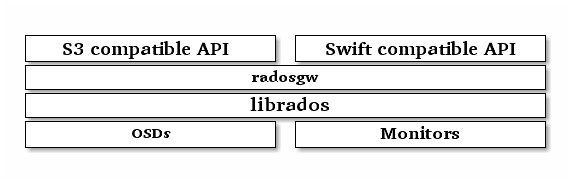

Ceph 对象网关¶
Ceph 对象网关是个对象存储接口，在 librados 之上为应用程序构建了一个 RESTful 风格的 Ceph 存储集群网关。
Ceph 对象存储支持 2 种接口：
- S3-compatible: 提供了对象存储接口，与亚马逊的 S3 RESTful 风格的接口兼容。
- Swift-compatible: 提供了对象存储接口，与 OpenStack 的 Swift 接口兼容。
Ceph 对象存储使用 Ceph 对象网关守护进程（ radosgw ），它是个与 Ceph 存储集群交互的 FastCGI 模块。因为它提供了与 OpenStack
Swift 和 Amazon S3 兼容的接口， RADOS 要有它自己的用户管理。
Ceph 对象网关可与 Ceph FS 客户端或 Ceph 块设备客户端共用一个存储集群。 S3 和 Swift API 共用一个通用命名空间，所以你可以用一个
API 写、然后用另一个检出。

Note
Ceph 对象存储不使用 Ceph 元数据服务器。